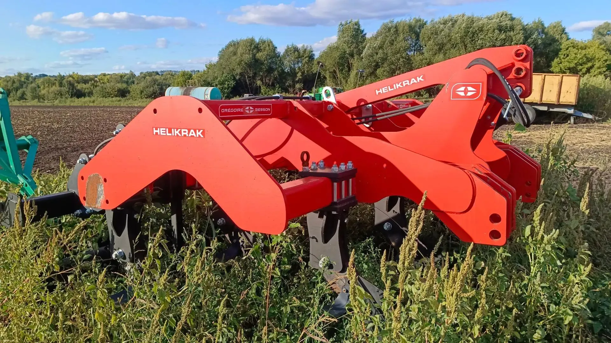
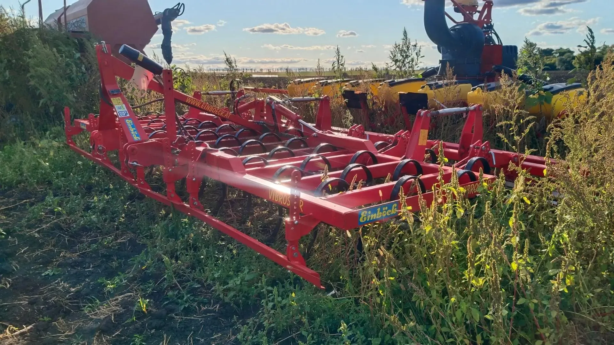
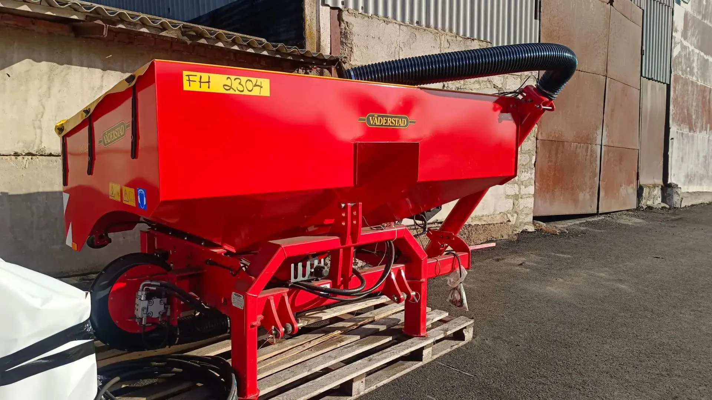
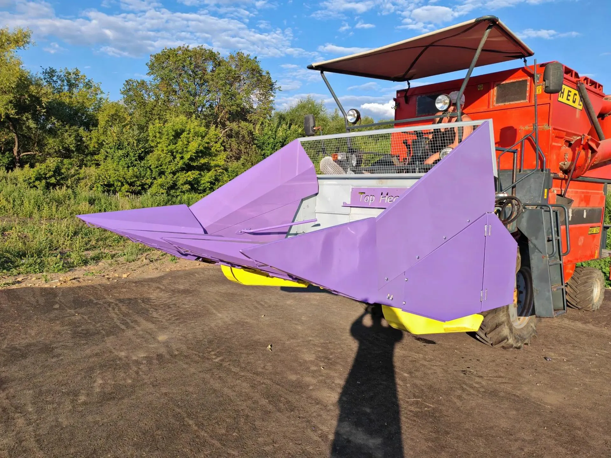
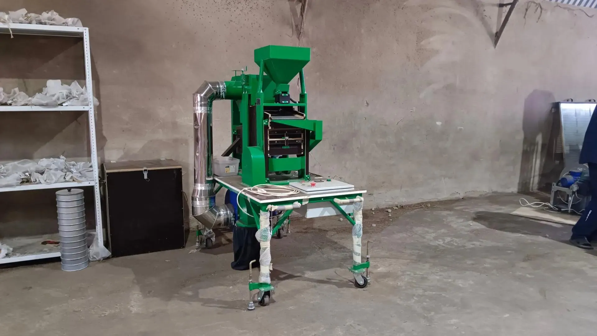
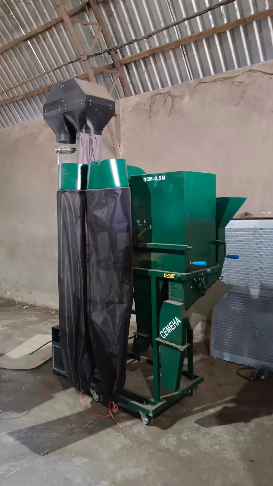
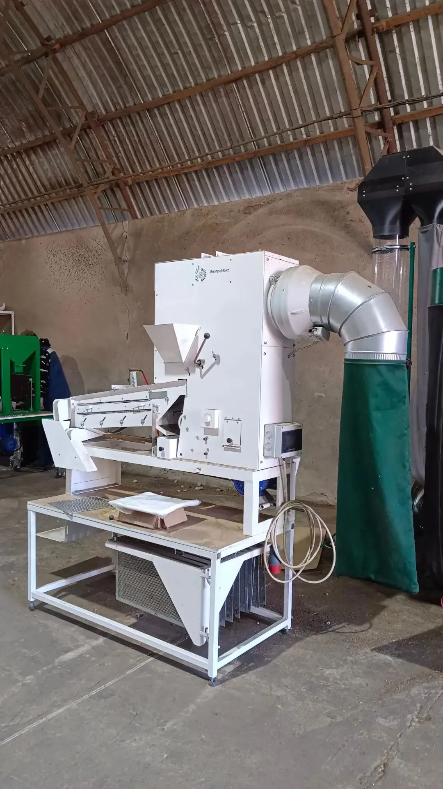
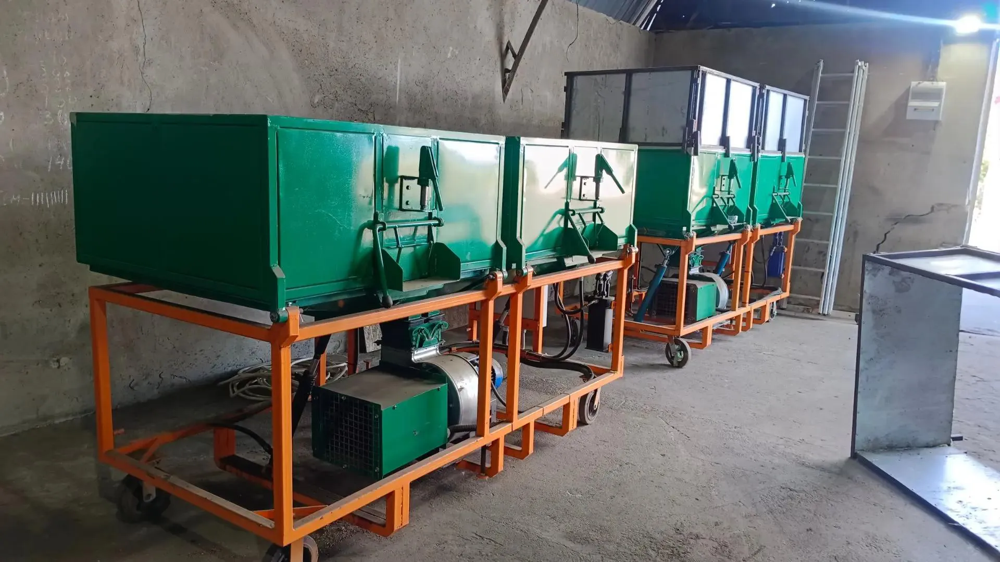
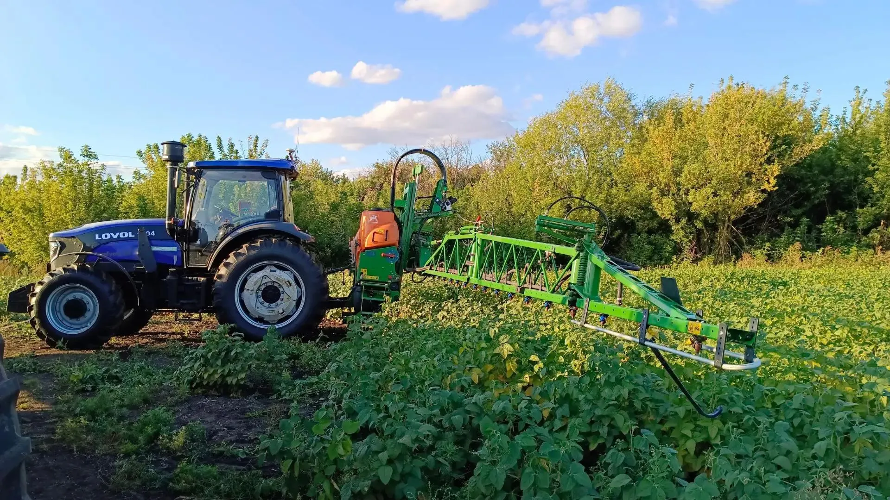

Техника и оборудование

-converted.webp)

Почвообрабатывающая техника
Мы убеждены: качественный урожай рождается на старте, и начинается с правильной почвоподготовки. Именно поэтому парк почвообрабатывающей техники О.А.З.И.С. формируется исключительно из проверенных решений ведущих мировых брендов.
В нашей работе мы используем оборудование Amazone, Lemken, Väderstad, Normandie, Helikrak, и других признанных производителей, способных обеспечить наилучшее качество обработки.

Посевная техника
Одним из ключевых факторов успеха в нашей работе является применение современной посевной селекционной техники отечественных и импортных производителей: WINTERSTEIGER, ZÜRN Harvesting, HALDRUP, КЛЕН, Maschio Gaspardo. Это позволяет нам добиваться безукоризненной точности посева для получения равномерных всходов и реализации генетического потенциала семян.

Уборочная техника
Для обеспечения абсолютной генетической чистоты и бережного обмолота при уборке мы используем высокотехнологичные селекционные комбайны и оборудование, исключающие травмирование семян и позволяющие получать семенной материал наивысшего качества.
Парк уборочной техники О.А.З.И.С включает в себя: WINTERSTEIGER, ZÜRN Harvesting, HALDRUP, Sampo-Rosenlew, Kubota.




Машины для послеуборочной подготовки
Для финальной очистки и калибровки нами используются современные зерноочистительные машины Petkus, Cimbria, КЛЕН, ИнагроМакс, сушилка СБ, ОВС-25, GV-1-7.

Опрыскивательная техника
Для своевременной и точной защиты посевов мы используем современную опрыскивательную технику. Она позволяет равномерно вносить средства защиты растений и соблюдать технологические требования на каждом участке.
Точность обработки помогает поддерживать здоровье растений, снижать влияние сорняков, болезней и вредителей, а также сохранять потенциал урожайности селекционных посевов.